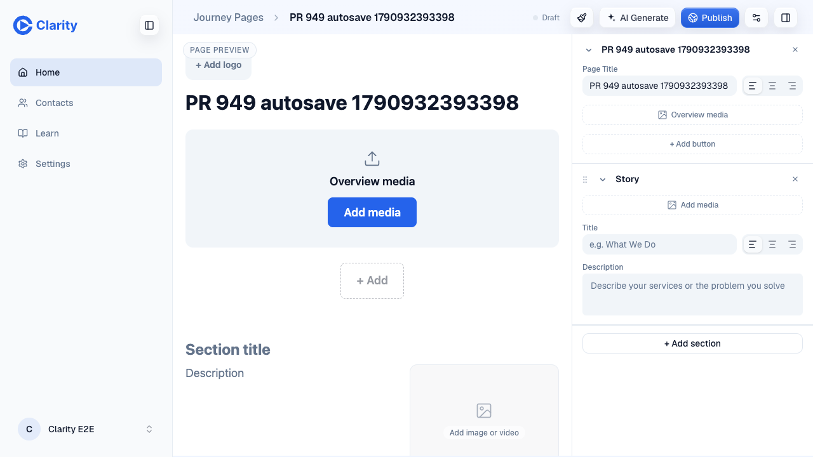
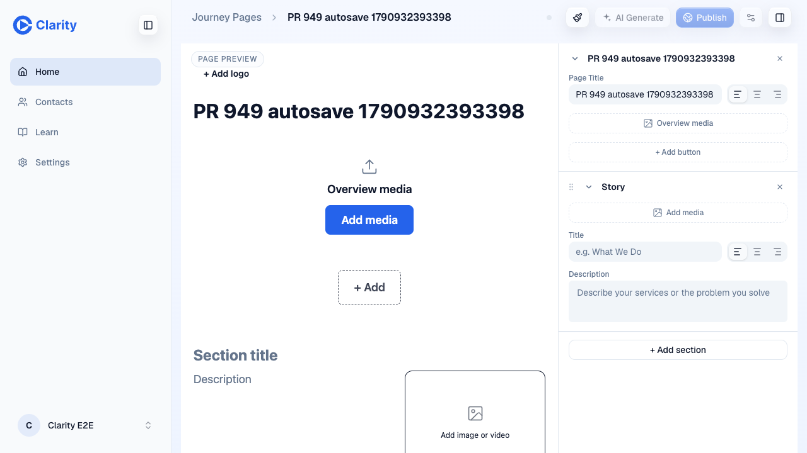
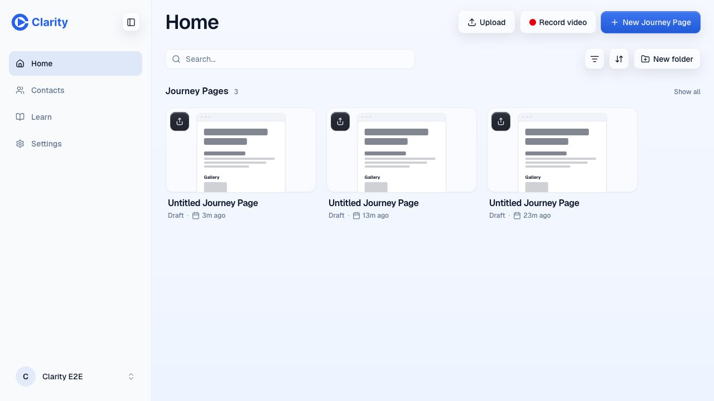
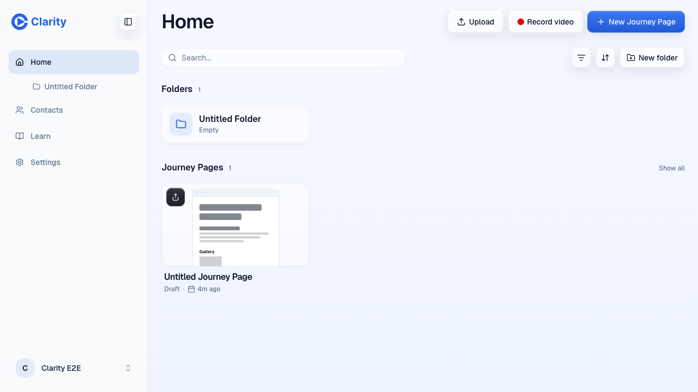
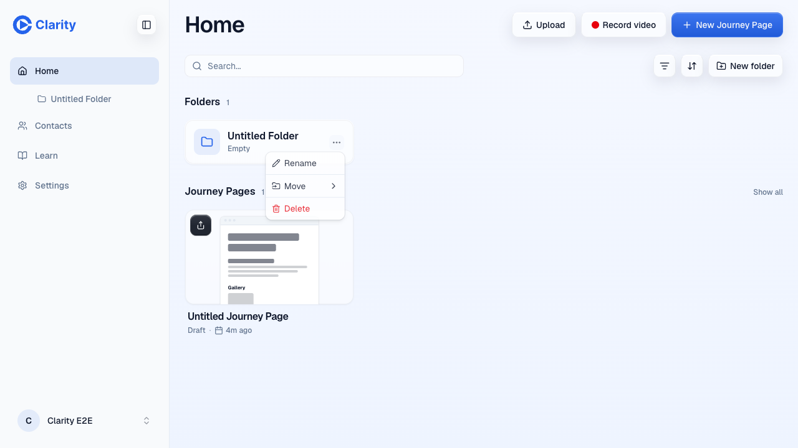

Head 115fa526 on chore/verifier-followups-editor, served from
https://pr-949.clarity-video.workers.dev as merge dccc5322.
Signed in as the e2e pro test account. 2 October 2026.
Autosave still writes on its own
A new page at /new, a typed headline, no manual save and no publish. The topbar
reached its saved state on the autosave timer alone and the route moved to the created page.

After typing, before any reload.

Reloaded from the server: the headline came back, so the write landed.

The test page deleted again, confirmed on a fresh load.
The folder card's first press, dropped from this PR
Proven on an earlier build of this preview, before the coordinator moved the fix out because
PR 953 rewrites MediaCard.tsx. Both shots are the same scripted click on a folder
card's Actions button with no hover in front of it.

With the rules on main, the press never reaches the button: the folder row intercepts it and
nothing happens.

With the cluster hit-testable while quiet, the same press opens the menu.